GLPI (Gestionnaire Libre de Parc Informatique) est un logiciel libre et
open-source permettant de gérer les parcs informatiques et les services
d'assistance (helpdesk). Il est largement utilisé dans les entreprises pour
l’inventaire des équipements, la gestion des tickets d’assistance, et la
planification des ressources.
Principales fonctionnalités de GLPI :
Gestion des équipements (ordinateurs, imprimantes, logiciels, etc.)
Suivi des tickets de support
Gestion des utilisateurs et des profils
Notifications par e-mail et intégration avec des plugins
GLPI permet ainsi d'améliorer la gestion et la traçabilité des actifs
informatiques.
2/ Déployer GLPI sur votre serveur web : extraire les fichiers dans le
répertoire racine de votre serveur (par exemple :
/var/www/html/glpi).
3/ Créer une base de données dédiée à GLPI à l’aide de phpMyAdmin ou en
ligne de commande MySQL.
4/ Accéder à l’interface d’installation en naviguant sur
http://votre-serveur/glpi
et suivre les instructions.
Vous devrez fournir les informations de la base de données et configurer les
paramètres initiaux.
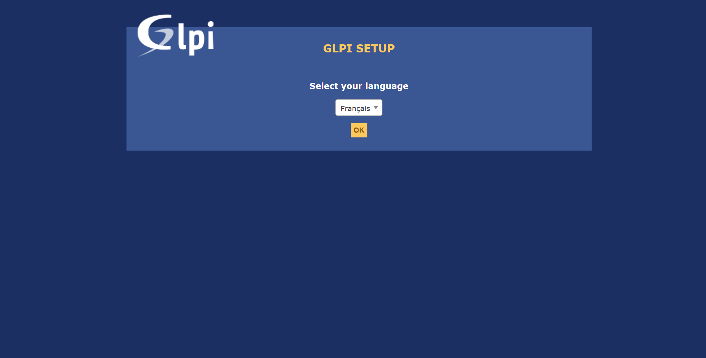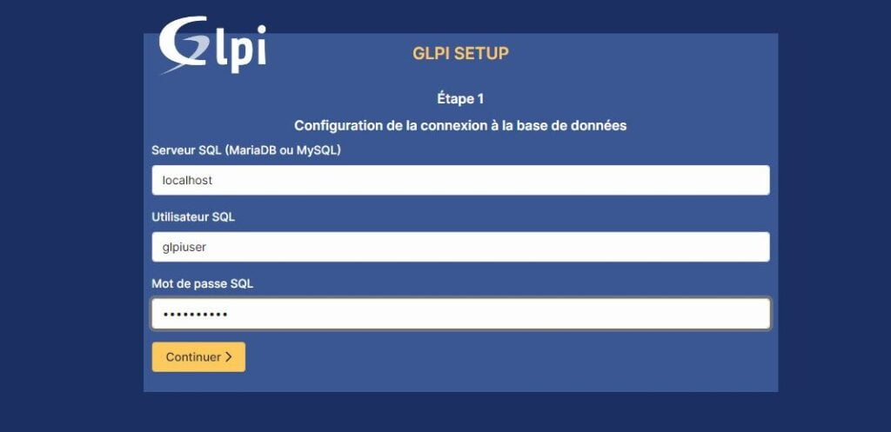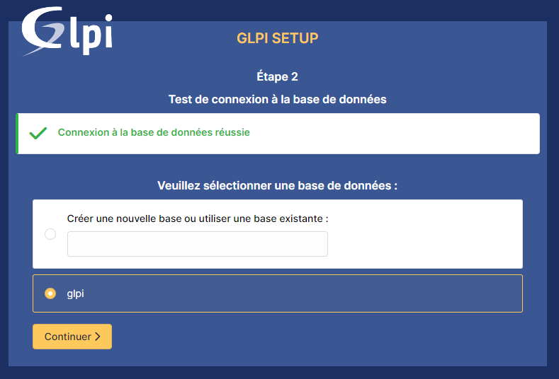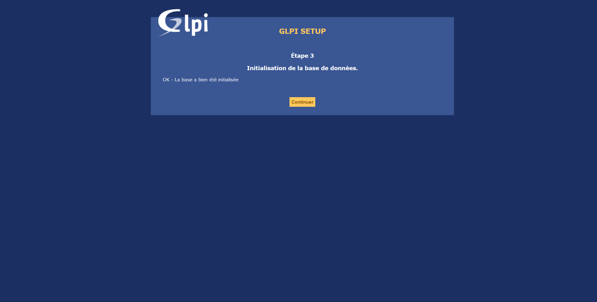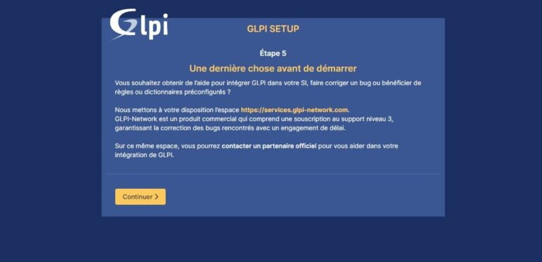
3. Première connexion et découverte de l’interface
Une fois l'installation terminée, connectez-vous à l'interface de GLPI avec
les identifiants administratifs par défaut :
Utilisateur :
glpi
Mot de passe :
glpi
Découverte de l'interface :
Tableau de bord
: Vue d’ensemble des informations critiques (tickets en attente, nouvelles
demandes, etc.).
Menus principaux
: Gestion des utilisateurs, des équipements, des tickets, des plugins, etc.
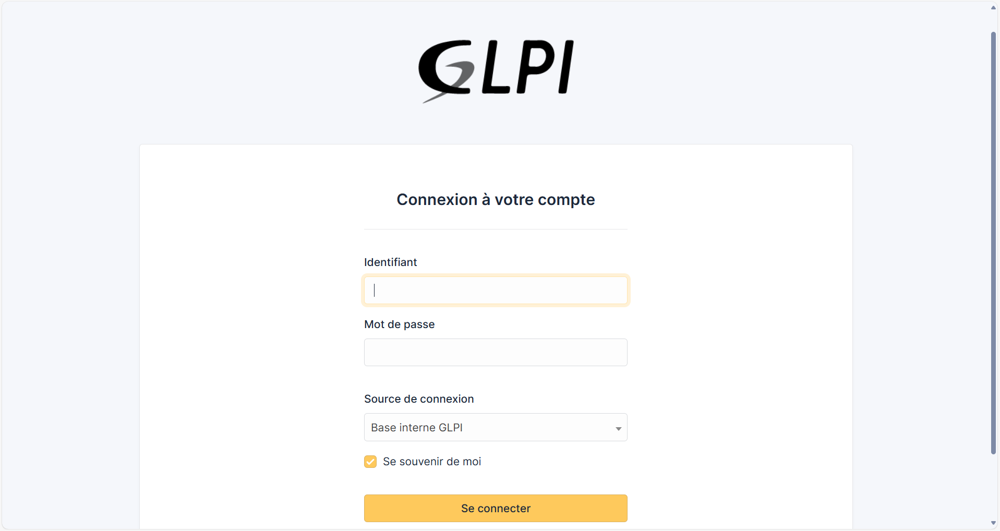 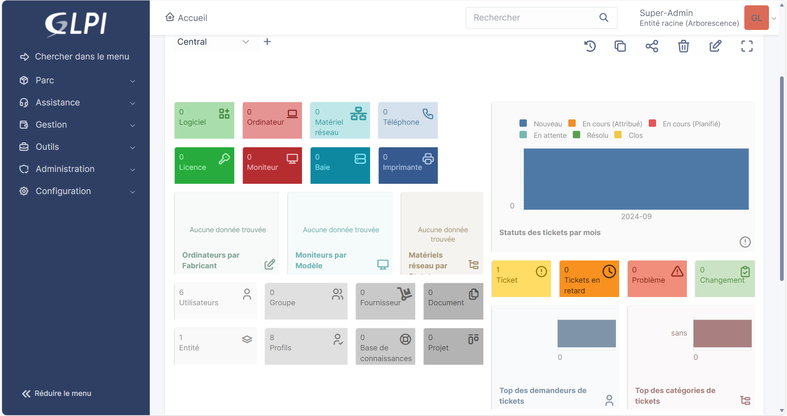
4. Création et gestion des utilisateurs
Ajouter un nouvel utilisateur :
1/ Allez dans
Administration > Utilisateurs.
2/ Cliquez sur
Ajouter
et remplissez les informations de l'utilisateur (nom, prénom, e-mail, etc.).
3/ Définissez un profil pour cet utilisateur (administrateur, technicien,
utilisateur standard).
4/ Validez en cliquant sur
Ajouter.
Gestion des droits d'accès :
GLPI permet de définir des droits spécifiques pour chaque utilisateur à
travers des profils et des groupes. Vous pouvez également associer les
utilisateurs à des entités pour limiter leur accès à certaines parties du
système.
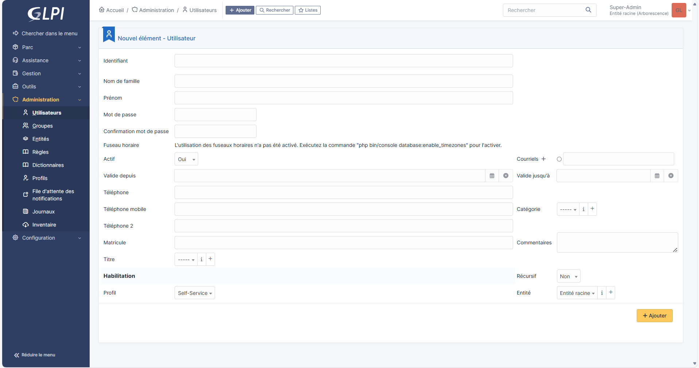
5. Gestion des équipements (inventaire)
Ajouter un nouvel équipement :
1. Allez dans
Parc > Ordinateurs
(ou tout autre type d'équipement : imprimantes, moniteurs, téléphones).
2. Cliquez sur
Ajouter
et remplissez les champs requis (nom de l’équipement, numéro de série, etc.).
3. Sélectionnez l'entité à laquelle cet équipement est rattaché.
Modifier ou supprimer un équipement :
Vous pouvez éditer les informations d’un équipement en cliquant dessus et en
modifiant les champs souhaités. Pour le supprimer, utilisez le bouton
Supprimer.
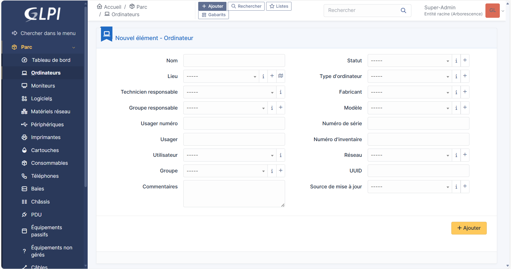
6. Gestion des tickets d'assistance
Création d'un ticket :
1/ Allez dans
Assistance > Tickets.
2/ Cliquez sur
Créer un ticket.
3/ Remplissez les détails du ticket (sujet, description, priorité).
4/ Attribuez un technicien si nécessaire.
5/ Cliquez sur
Ajouter.
Suivi des tickets :
Les utilisateurs peuvent suivre l'état de leurs tickets à travers
l'interface. Les techniciens peuvent modifier l'état du ticket en fonction des
actions effectuées.
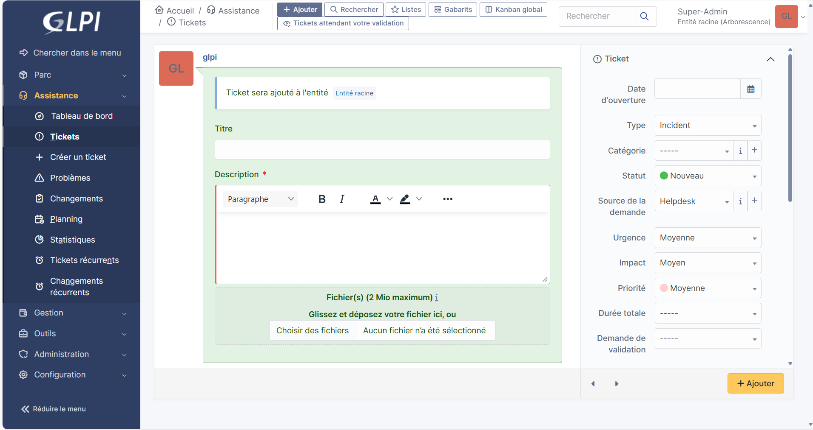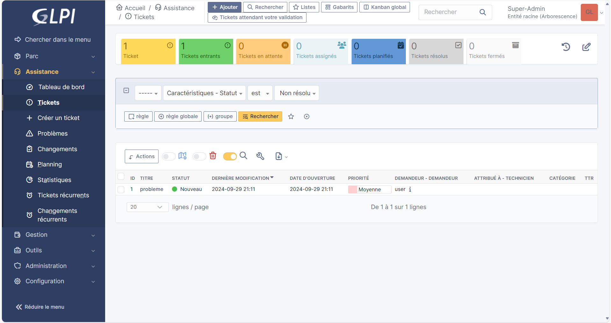
7. Gestion des logiciels
Ajouter un logiciel :
1/ Allez dans
Parc > Logiciels.
2/ Cliquez sur
Ajouter.
3/ Remplissez les informations du logiciel (nom, version, éditeur).
4/ Associez les ordinateurs sur lesquels le logiciel est installé.
5/ Cliquez sur
Ajouter.
Suivi des licences :
Il est important de suivre les licences de chaque logiciel pour assurer la
conformité. GLPI permet de gérer les informations relatives aux licences et leur
expiration.
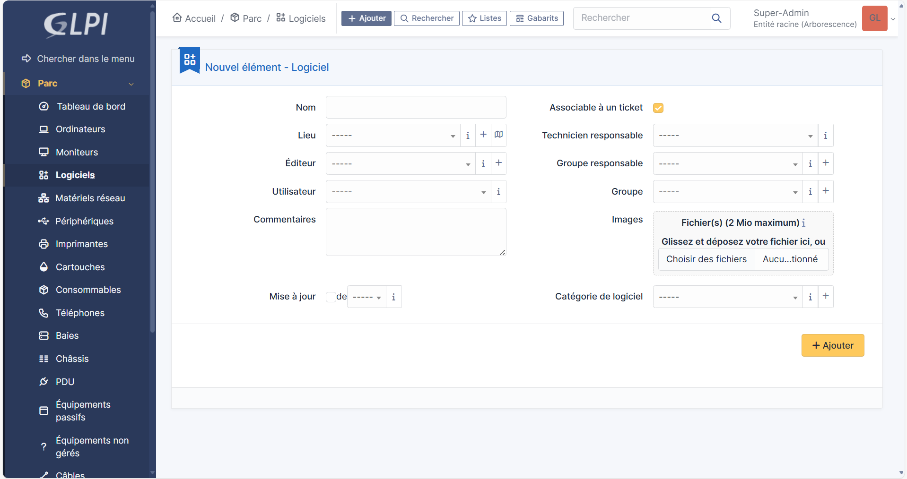
8. Gestion des contrats
Ajouter un contrat :
1/ Allez dans
Administration > Contrats.
2/ Cliquez sur
Ajouter.
3/ Remplissez les détails du contrat (type, fournisseur, date d'expiration).
4/ Liez le contrat à des équipements ou services spécifiques si nécessaire.
5/ Cliquez sur
Ajouter.
Suivi des contrats :
GLPI permet de recevoir des notifications pour les contrats arrivant à
expiration, ce qui aide à maintenir la gestion des ressources à jour.
9. Gestion des entités
Créer une entité :
1/ Allez dans
Administration > Entités.
2/ Cliquez sur
Ajouter.
3/ Remplissez les informations de l'entité (nom, description).
4/ Cliquez sur
Ajouter.
Gestion des utilisateurs par entité :
Les utilisateurs peuvent être associés à des entités spécifiques, ce qui
permet de segmenter la gestion du parc informatique par départements ou sites.
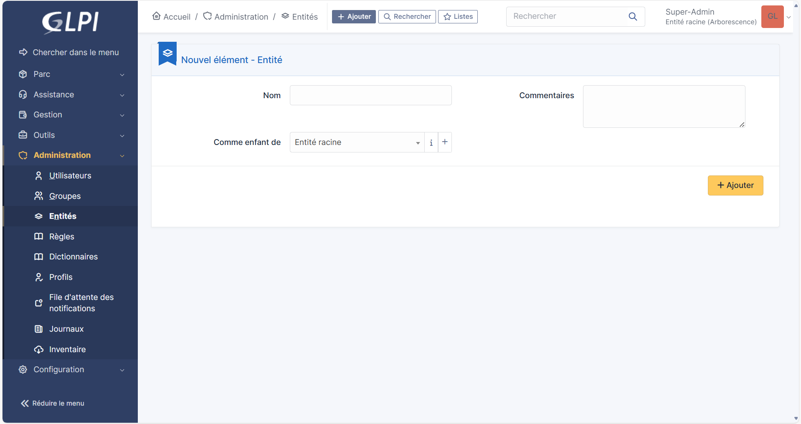
10. Utilisation des plugins
Installer un plugin :
1/ Téléchargez le plugin depuis le site officiel de GLPI ou un dépôt tiers.
2/ Décompressez le fichier dans le répertoire
glpi/plugins.
3/ Accédez à GLPI et allez dans
Configuration > Plugins.
4/ Activez le plugin souhaité.
Exemples de plugins :
Il existe de nombreux plugins qui ajoutent des fonctionnalités
supplémentaires à GLPI, comme la gestion des stocks, l'intégration de
messagerie, etc.
11. Personnalisation de GLPI
Changer le thème :
1/ Allez dans
Administration > Configuration.
2/ Sous l'onglet
Apparence, choisissez le thème désiré.
3/ Enregistrez les modifications.
Paramétrer les notifications :
Vous pouvez configurer les notifications par e-mail dans
Administration > Notifications
pour informer les utilisateurs des mises à jour des tickets, des contrats, etc.
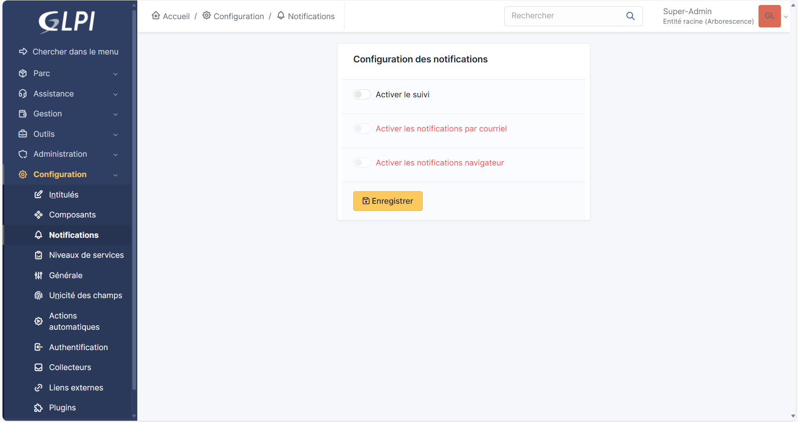
12. Exporter et importer des données
Exporter des données :
GLPI permet d’exporter des données sous différents formats (CSV, PDF) à
partir de la plupart des pages de gestion.
Importer des données :
Utilisez les outils d'importation disponibles pour ajouter des utilisateurs,
des équipements ou des tickets en masse.
13. Sauvegarde de GLPI
Stratégies de sauvegarde :
Il est essentiel de sauvegarder régulièrement la base de données de GLPI
ainsi que les fichiers de configuration. Voici quelques méthodes :
Sauvegarde automatique via des scripts cron.
Utilisation de solutions de sauvegarde tierces.
Sauvegarde manuelle de la base de données avec
mysqldump.
Restaurer GLPI :
Pour restaurer GLPI, vous devrez restaurer la base de données et les fichiers
dans leurs emplacements d'origine.
14. Mise à jour de GLPI
Processus de mise à jour :
Pour maintenir GLPI à jour, suivez ces étapes :
1/ Téléchargez la dernière version de GLPI.
2/ Sauvegardez vos données (comme mentionné précédemment).
3/ Remplacez les fichiers de GLPI par les nouveaux.
4/ Accédez à l'interface d'administration pour appliquer les mises à jour de
la base de données.
Consulter les notes de version :
Il est conseillé de lire les notes de version pour être au courant des
modifications importantes et des nouvelles fonctionnalités.
15. Ressources et support
Documentation officielle :
Consultez la documentation officielle de GLPI pour des guides détaillés et
des conseils :
Documentation GLPI.
Forums et communauté :
Participez à la communauté GLPI pour obtenir de l'aide, poser des questions
et partager vos expériences :
 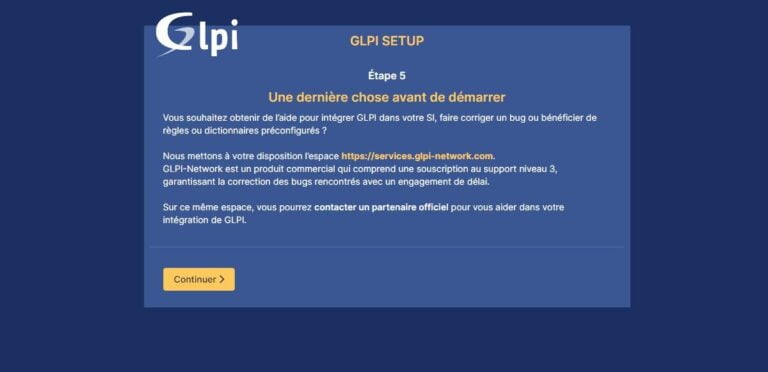
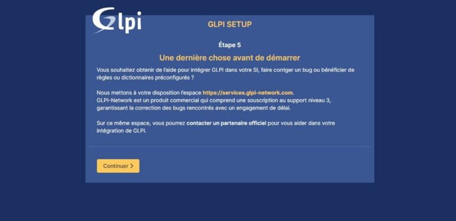